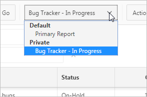

3.7 Saving Interactive Grids
Save your changes as a new report within the application. Name and keep these interactive grid reports Private or make them Public to share with other users.
- About Interactive Grid Report Types
Reports in interactive grids have different uses and characteristics. You interact with the Primary report of an interactive grid, and save your changes as Private reports. - Saving a Report in an Interactive Grid
Save your changes to an interactive grid by clicking Save As in the Actions, Report submenu. - Renaming a Report in an Interactive Grid
Change the name of an interactive grid report by selecting Edit in the Actions, Report submenu. - Deleting a Report in an Interactive Grid
Delete a Private report from an interactive grid by selecting Delete in the Actions, Report submenu.
Parent topic: Using Interactive Grids
3.7.1 About Interactive Grid Report Types
Reports in interactive grids have different uses and characteristics. You interact with the Primary report of an interactive grid, and save your changes as Private reports.
The following is a list of default report types in Oracle Application Express, although developers can choose to add more:
- Private Report
-
You can save a Private report of the interactive grid to preserve your changes to it (such as filters, aggregations, column order, visible columns, and other customizations).
Private reports can only be viewed by the user who creates them.
- Primary Report
-
The default view of an interactive grid is the Primary report.
While you can customize the look and organization of a Primary report, you cannot overwrite or rename it. The Primary report is useful as a backup or a starting point for customizing new views of the interactive grid.
After you save at least one private report, a drop-down list appears on the toolbar near the Search bar. You can use this to select between reports.
See Also:
"How the User Type Effects Available Save Options" in the Oracle Application Express App Builder User’s GuideParent topic: Saving Interactive Grids
3.7.2 Saving a Report in an Interactive Grid
Save your changes to an interactive grid by clicking Save As in the Actions, Report submenu.
To save a Private interactive grid:
The report is saved and a confirmation message displays.
If there is now more than one saved report available in the interactive grid, a drop-down list appears on the toolbar between the Search Bar and Actions menu.

Parent topic: Saving Interactive Grids
3.7.3 Renaming a Report in an Interactive Grid
Change the name of an interactive grid report by selecting Edit in the Actions, Report submenu.
To rename a report:
Parent topic: Saving Interactive Grids
3.7.4 Deleting a Report in an Interactive Grid
Delete a Private report from an interactive grid by selecting Delete in the Actions, Report submenu.
To delete an interactive grid report:
Parent topic: Saving Interactive Grids